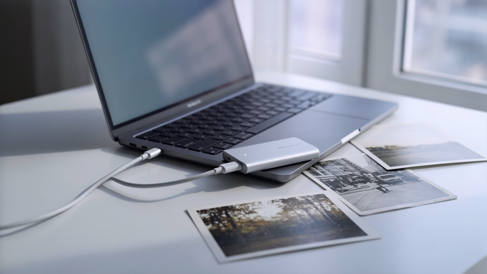
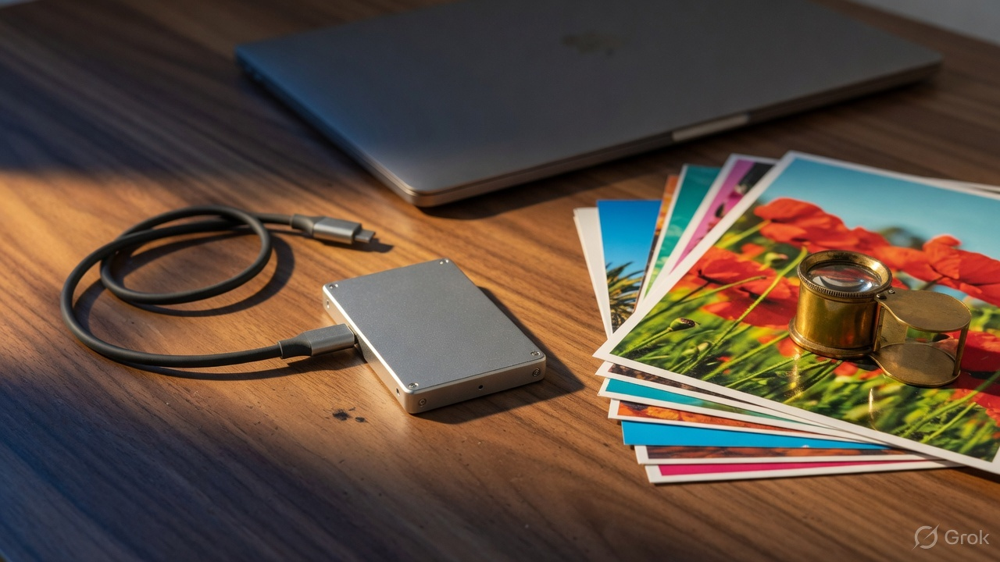

One drive, two desks.
Index on the first Mac. Walk the disk across the room. Search on the second, with no second pass over the photos.

Free · On this Mac · On the disk you plug in
Type what you remember. Matching files come back from this Mac and from any HDD or SSD that already holds an index. The catalog lives next to the pictures, so the disk carries search with it.
Version 0.1.0 · unsigned pkg · Apple Silicon, macOS 14+

Other search apps keep the catalog on the computer. Loupe writes it on the volume, in a hidden folder named .photo_index.
Unplug the HDD and that catalog leaves with the photos. Plug the same disk into another Mac running Loupe and search continues. No copy off the drive. No re-index.
Index on the first Mac. Walk the disk across the room. Search on the second, with no second pass over the photos.

You don’t need the file name. Describe what’s in the frame. Camera terms you actually shot with still filter: 35mm, f1.8, iso400.
blue cap on a dog
Finds the picture by what’s in it.
wet street at night 35mm
Words rank the frame. EXIF cuts the rest.
kitchen interior
If that volume has an index, it joins. Unplug it and folders on this Mac still answer.
Version 1 is images: JPEG, HEIC, PNG, TIFF, WebP, GIF, AVIF, RAW. Documents and video come later.
Download the pkg, right-click, Open. Loupe sits in the menu bar.
Settings → Add folder on this Mac. On an HDD, Choose folder so the catalog lands next to those photos.
⇧⌘Space. Return opens. ⌘Return shows Finder.
⇧⌘Space Open ↩ File ⌘↩ Finder ⌘, Settings Esc Park
Loupe is not a chat app. It runs a small multimodal embedder so a sentence and a photograph share a space. The default is sized for a 16 GB machine, so an HDD indexed there still opens on a 32 GB Mac.
| Memory | Use this | |
|---|---|---|
| 16 GB | EmbeddingGemma 2 Q8 | What ships. ~865 MB weights, about 2 GB unified while indexing. |
| 24 GB | EmbeddingGemma 2 Q8 | Same model. Headroom for a large library. Disks stay portable. |
| 32 GB | EmbeddingGemma 2 Q8, still | Extra RAM helps decode. Same catalog as a 16 GB Mac, so disks stay portable. |
Those apps keep the index on the computer. Loupe writes it on the disk next to the photos. Plug that HDD into another Mac running Loupe and the same catalog is searched, with no re-index.
That disk is skipped. Search keeps running on every folder that is still here.
No. The only download is the model the first time (~865 MB), and an optional update check that sends nothing about photos.
This first pkg is unsigned. Right-click the file, choose Open.
Not yet. Export to a folder, or wait for PhotoKit.
Version 0.1.0 · Apple Silicon · the index lives with the photos